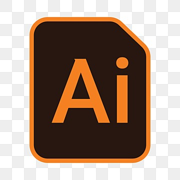

- illustration(클릭)
- short key(클릭)
- pentool(클릭)
기본 도형만으로 캐릭터 그리고 이미지 저장하기

- 도형 복사: alt + 드래그
- 도형 수평복사: shift + alt + 드래그
- object lock 걸기
- 도형합치기
- 코너부분 둥글게 하기
- 색채우기
- 그룹 만들기
- 저장하기, 웹페이지버전 jpg버전으로 다운하기
- 사이즈 맞추기
- 펜툴
- 펜툴 포인트 추가 +
- 포인트 삭제 -
- 펜툴 휘어지게 shift+ c (항상 직각이나 정렬되게 하는건 shift)
- 펜툴 끝내기 ctrl+클릭
shift 누른 상태로 스페이스바 누르면 화면 돌아가기, 그상태에서 shift다시 누르면 평행이나 직각
shift는 평행이나 직각 정사각형 등 물체 들을 똑바로 해주는 키
컨트롤은 취소 하거나 컨트롤 g그룹지어줄떄 ctrl0 ctrl1 빠르게 페이지 정렬
알트는 확대 , 스페이스바는 움직임
alt키 눌러서 펜툴 사용도중 하나의 path길 바꾸기